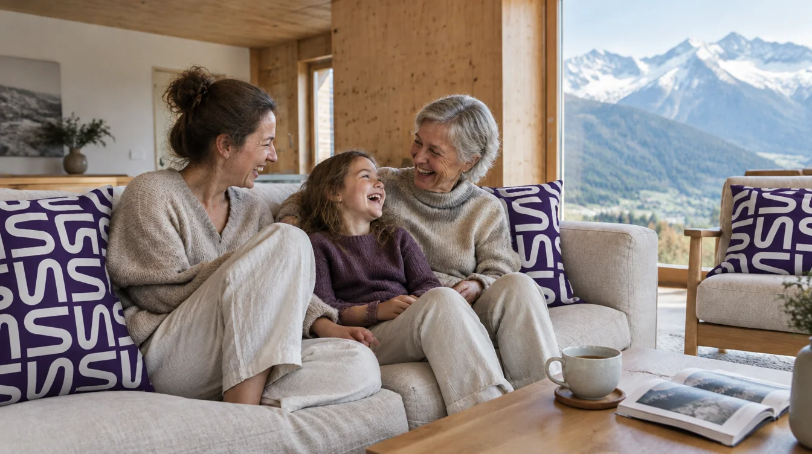
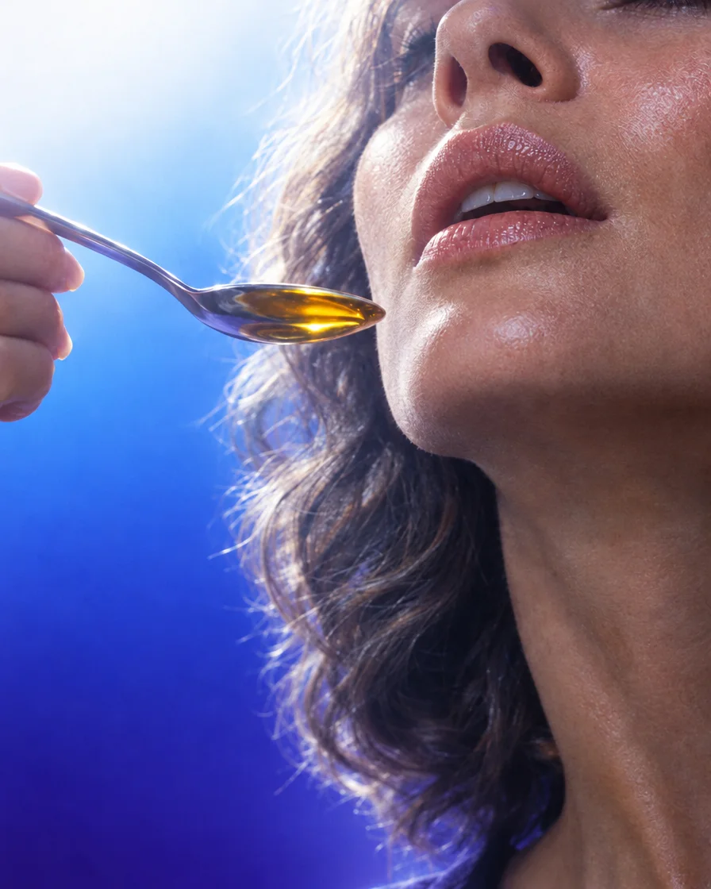
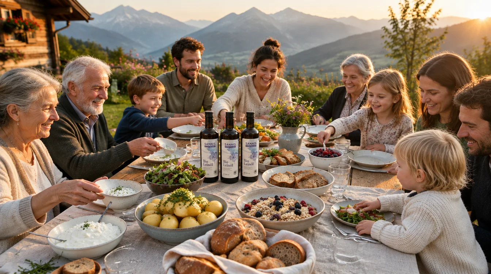
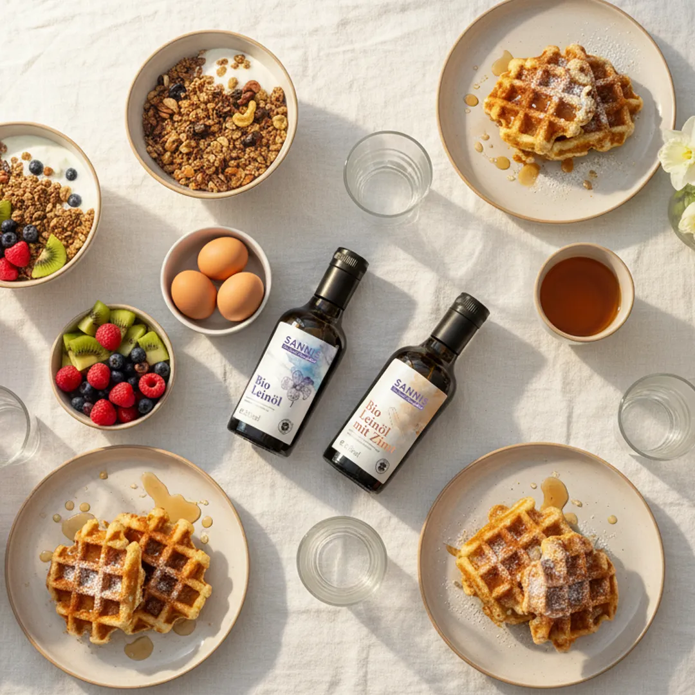
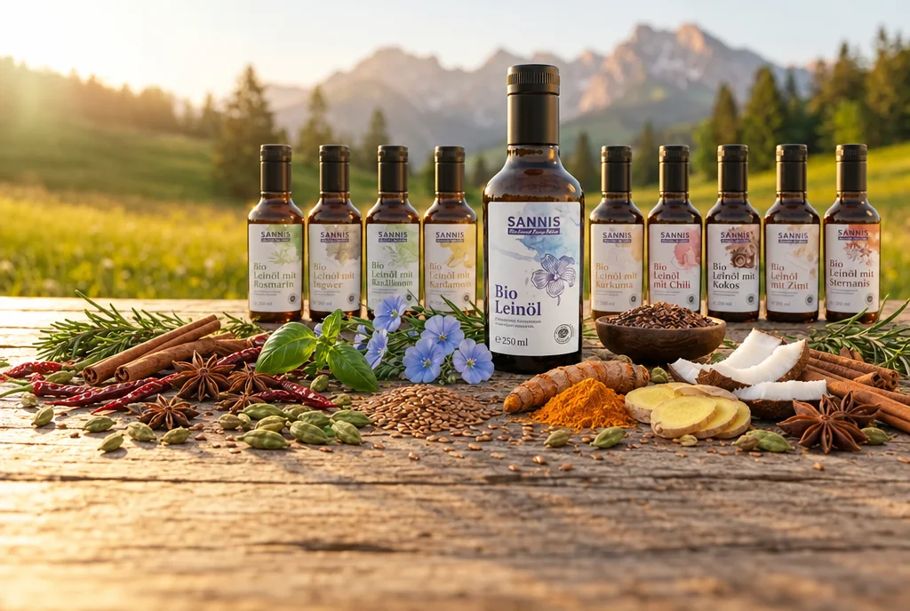
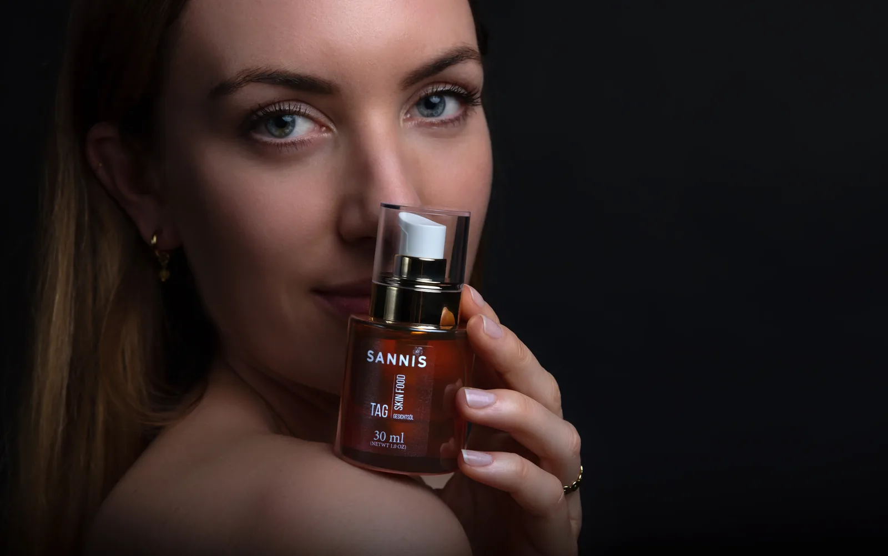
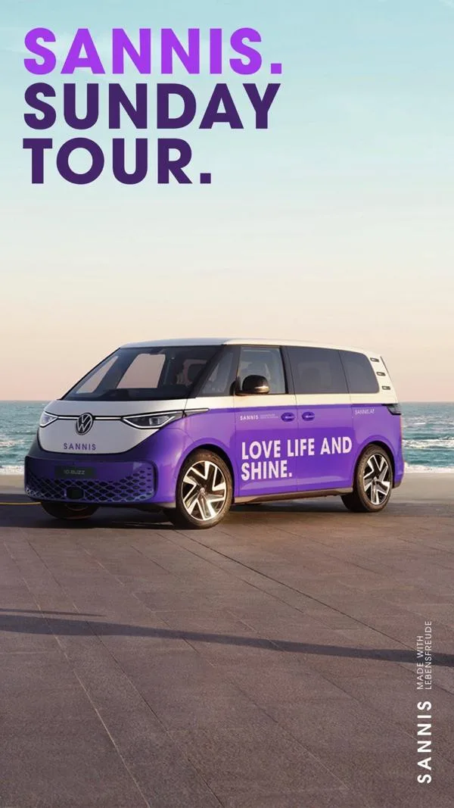
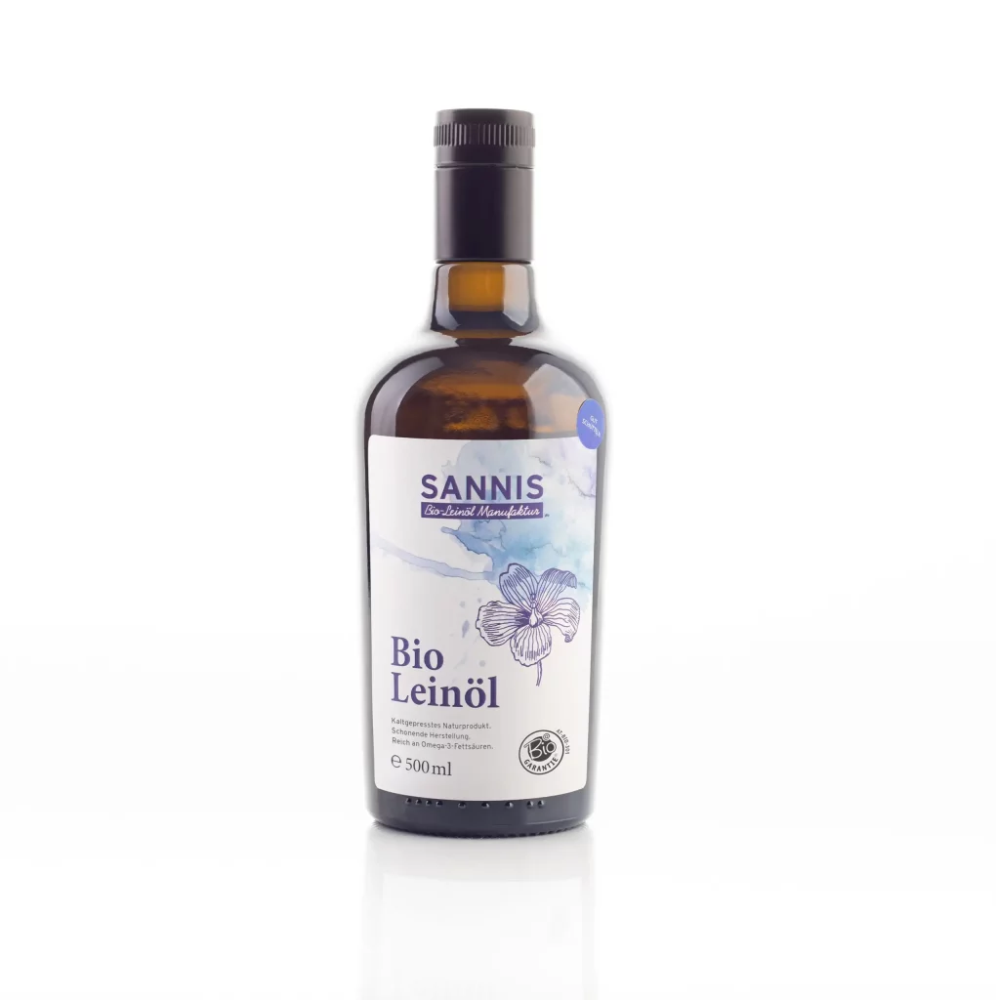
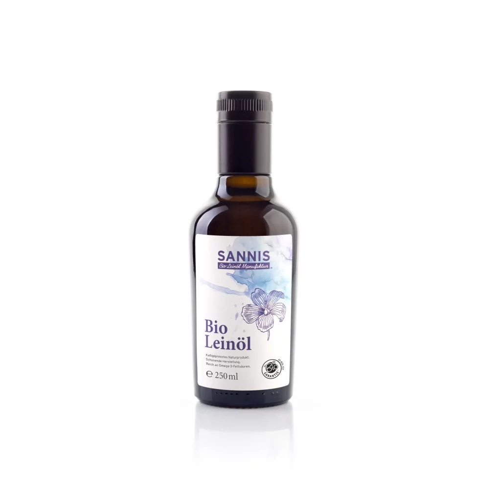
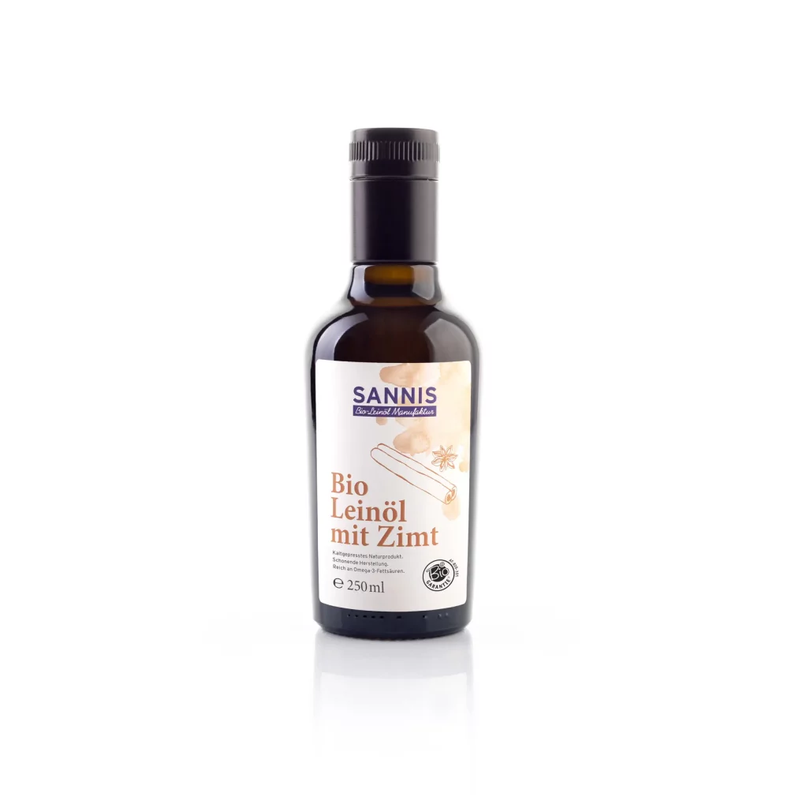

LOVELEINÖLANDSHINE.
Mild, nussig, nicht bitter. Kalt gepresst unter 29 Grad, ungefiltert, ohne Konservierung und innerhalb weniger Tage bei dir. Alles, was du über unser Bio-Leinöl wissen willst, steht auf dieser Seite.
Bio-Leinöl ist das Öl aus den Samen der Leinpflanze. SANNIS presst es in Wald am Arlberg kalt, unter 29 Grad, aus Bio-Leinsamen von Landwirtschaften in Österreich und Deutschland: ungefiltert, ohne Konservierung, frisch abgefüllt. Mit über 55 Prozent Alpha-Linolensäure ist es eine der reichsten pflanzlichen Quellen für Omega 3.
Leinsamen aus kontrolliert biologischer Landwirtschaft, EU-Bio-zertifiziert (AT-BIO-301).
Kalt gepresst im Slow-Press-Verfahren. Rund 30 Minuten für einen halben Liter.
Lichtundurchlässige Glasflasche mit patentiertem Frischeverschluss: nach dem Öffnen bis zu 6 Monate im Kühlschrank frisch.

Unsere Leinsamen kommen von Bio-Landwirtschaften in Österreich und Deutschland. Jede Lieferung wird geprüft, bevor sie in die Presse darf.
Die Schnecke dreht sich langsam. So bleibt das Öl kühl, und aus einem halben Liter werden rund 30 Minuten Handwerk. Wir nennen es Slow Press.
Wir lassen das Öl absetzen statt es zu filtern. Es kommt nichts dazu und nichts weg. Deshalb ist es leicht trüb, und deshalb schmeckt es nach dem Samen.
In die eigens entwickelte, lichtundurchlässige Glasflasche mit patentiertem Frischeverschluss. Kleine Chargen, Versand innerhalb weniger Tage. Was bei dir ankommt, wurde gerade erst gepresst.
des Öls ist ALA, die pflanzliche Omega-3-Fettsäure. Mehr als in jedem anderen Speiseöl aus unserer Manufaktur.
Ein knapper Esslöffel Bio-Leinöl liefert rund 5 g ALA. Das ist mehr als die 2 g pro Tag, auf die sich der zugelassene Hinweis bezieht.*
ALA täglich. Im Rahmen einer abwechslungsreichen, ausgewogenen Ernährung und einer gesunden Lebensweise.*
* Alpha-Linolensäure trägt zur Aufrechterhaltung eines normalen Cholesterinspiegels im Blut bei. Die positive Wirkung stellt sich bei einer täglichen Aufnahme von 2 g ALA ein, im Rahmen einer abwechslungsreichen, ausgewogenen Ernährung und einer gesunden Lebensweise. Mehr zu pflanzlichem Omega 3, zum Verhältnis von Omega 3 zu Omega 6 und zur Frage, wie viel Leinöl am Tag sinnvoll ist, liest du im Ratgeber Pflanzliches Omega 3.

KI-generiertes BildWie schmeckt Bio-Leinöl? Frisch gepresst schmeckt SANNIS Bio-Leinöl mild, nussig, nicht bitter, mit einem Hauch Sonne. Das ist auch das, was uns Kundinnen und Kunden am häufigsten zurückmelden, fast immer im Vergleich zu einem Leinöl, das sie vorher hatten.
Bitter wird Bio-Leinöl erst, wenn es alt wird. Licht, Luft und Wärme lassen die empfindlichen Omega-3-Fettsäuren oxidieren. Ein bitteres, kratziges Öl ist deshalb kein Geschmacksmerkmal, sondern ein Frischesignal. Genau darum pressen wir in kleinen Chargen und haben eine eigene Flasche gebaut: lichtundurchlässiges Glas und ein patentierter Frischeverschluss, der den Sauerstoffkontakt beim Eingießen und im verschlossenen Zustand minimiert.
Deshalb lichtundurchlässiges Glas statt brauner Flasche, und nach dem Öffnen in den Kühlschrank.
Der patentierte Frischeverschluss minimiert den Sauerstoffkontakt. Herkömmliche Leinöle halten nach Anbruch nur wenige Wochen, bevor sie bitter werden.
Über Topfen, Müsli, Salat oder Erdäpfel. Zum Braten nimm ein anderes Öl, Bio-Leinöl kommt erst auf den Teller.
Das Mindesthaltbarkeitsdatum deiner Flasche findest du auf der Produktseite und auf dem Etikett.

Ein Löffel Bio-Leinöl passt in fast jede Mahlzeit. Am liebsten dort, wo es kalt bleibt und wo sein Geschmack etwas zu tun hat.

Wir streuen die Gewürze nicht einfach ins fertige Öl. In einem eigenen Verfahren kommen die echten Bio-Gewürze schon bei der Beimengung so ins Spiel, dass das Öl ihr Aroma direkt aufnimmt. Deshalb schmeckt Zimt nach Zimt und Chili nach Chili, ohne dass etwas am Boden liegen bleibt.
Extra nativ, Zimt, Chili, Kurkuma, Basilikum, Rosmarin, Sternanis, Kokos, Kardamom, Ingwer.

KI-generiertes BildPur. Mild, nussig, das Original.
Der Liebling im Müsli. Ceylon-Zimt.
Das schärfste Bio-Leinöl, mit einem Augenzwinkern.
Goldene Milch, Bowls, Curry kalt gerührt.
Tomaten, Mozzarella, Pasta vom Vortag.
Erdäpfel, Ofengemüse, weißes Brot.
Über Vanilleeis und Winterobst.
Smoothie, Porridge, Bananenbrot.
Chai-Bowl, Kaffee-Topfen, Zwetschken.
Karottensalat, Asia-Bowl, Shot am Morgen.
Was deinem Körper im Löffel gut tut, trägt unsere Pflegelinie auf die Haut: SANNIS Skin Food ist naturinspirierte Kosmetik auf Basis von Bio-Leinöl. Reinigungsöl, Rosentonic, Tages- und Nachtöl, Cremes und Balsame, alle mit unserem Öl als Herzstück.
Die Routine ist einfach: Reinigungsöl, Rosentonic, dann ein paar Tropfen Öl in die noch feuchte Haut. Wie Bio-Leinöl in der Hautpflege wirkt und worauf es bei Gesichtsölen ankommt, steht in unseren Ratgebern.

2014 hat Frank Nessler mit einer Flasche Bio-Leinöl angefangen, in Vorarlberg, im Klostertal zwischen Bludenz und dem Arlberg. Heute presst die Manufaktur in Wald am Arlberg zehn Sorten Leinöl, macht Pestos mit der Küche des Rössle Braz und verschickt in ganz Österreich und Deutschland.
Groß geworden sind wir nicht durch Werbung, sondern durch Menschen, die das Öl weiterempfehlen. Das verpflichtet: Jede Charge wird in kleinen Mengen gepresst, Bio-zertifiziert und im Labor untersucht.
Zertifikat gültig bis 31.12.2027, ohne Gentechnik nach EU-Verordnung 2018/848.
Fettsäureprofil und Stabilität über sechs Chargen und 300 Proben geprüft.
Für das Öl. Unsere Leinsamen im Glas und geschrotet kommen aus Österreich.
Gepresst unter 29 Grad, ungefiltert, abgefüllt in lichtundurchlässiges Glas mit Frischeverschluss.

von 5 Sternen aus über 700 Bewertungen für Lieferung, Ware und Service.
von 5 aus über 70 Rezensionen für die Manufaktur in Wald am Arlberg.
Erfahrungsberichte seit 2015, ungefiltert in der Reihenfolge des Eingangs.
S„Bio-Leinöl mit Zimt ist mein absoluter Favorit. Schmeckt mega im Müsli und die Qualität ist top. Bestelle schon zum dritten Mal!“
Kundin · Trusted Shops
S„3 Flaschen bestellt, einfach super. Toller Service und schnelle Lieferung. Kann ich nur weiterempfehlen!“
Kunde · Trusted Shops
S„Super Produkt, super Qualität. Nehme es täglich und bin rundum zufrieden. Klare Kaufempfehlung!“
Kunde · Trusted Shops
Die Erfahrungsberichte geben die persönliche Meinung einzelner Kundinnen und Kunden wieder. Sie sind keine Aussage von SANNIS über die Wirkung der Produkte.
Wonach ist dir heute?

Mild, nussig, frisch gepresst. Für Topfen, Erdäpfel und Salat. In der lichtundurchlässigen Flasche mit Frischeverschluss bis zu 6 Monate im Kühlschrank frisch.

Zum KennenlernenExtra nativ, 250 mlDie kleine Flasche zum Kennenlernen.
KundenlieblingMit Zimt, 250 mlDer Favorit im Müsli und Porridge. Zehn SortenAlle Bio-LeinölePur und mit echten Bio-Gewürzen verfeinert.Herstellung, Geschmack, Omega 3, Verwendung, zehn Sorten.
Pflanzliches Omega 3, ALA, Verhältnis zu Omega 6, Tagesmenge.
Naturinspirierte Kosmetik auf Basis von Bio-Leinöl.
Budwig Bowl, Energy Balls, Granola und mehr mit Bio-Leinöl.
Kräuter, Tomate, Olive. Auf Bio-Leinöl-Basis, mit dem Rössle Braz entwickelt.
Ganz und geschrotet, aus österreichischer Bio-Landwirtschaft.
Ein Lächeln,Frank
Frank Nessler · Gründer, Wald am Arlberg